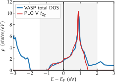

In this basic example we will perform a VASP calculation for SrVO\(_3\), build PLOs for the Vanadium t\(_{2g}\) orbitals, and load them as SumK object, which can be then used to perform a DMFT calculation.
VASP setup
First we setup the VASP INCAR link file by specifing the LOCPROJ, EMIN, EMAX and LORBIT flags:
SYSTEM = SrVO3
NCORE = 4
LMAXMIX=6
EDIFF = 1.E-10
# DOS energy window
NEDOS = 2001
! switch off symmetries
ISYM=-1
# Smearing procedure
ISMEAR = -5
# the energy window to optimize projector channels
EMIN = 3.9
EMAX = 7.1
# use the PAW channel optimization
LORBIT=14
# project to V d
LOCPROJ = 2 : d : Pr
Moreover we prepare a KPOINTS link, POSCAR link, and a POTCAR file. For the POTCAR file please use the VASP provided PBE pseudopotentials: Sr_sv, V, and O.
Now VASP is executed, which should converge in roughly 27 iterations. Afterwards you should find the files LOCPROJ and PROJCAR in you directory.
PLOVASP
First import the PLOVASP module of DFTTools:
[2]:
# import plovasp converter
import triqs_dft_tools.converters.plovasp.converter as plo_converter
Starting run with 1 MPI rank(s) at : 2019-12-05 16:12:52.689539
Next, create a configuration file for plovasp plo.cfg link:
[General]
DOSMESH = -3.0 3.0 2001
[Shell 1]
LSHELL = 2
IONS = 2
EWINDOW = -1.4 2.0
TRANSFORM = 1.0 0.0 0.0 0.0 0.0
0.0 1.0 0.0 0.0 0.0
0.0 0.0 0.0 1.0 0.0
where the energy window of the t\(_{2g}\) bands is specified by EWINDOW and the TRANSFORM flag picks the correct three orbitals out of the five Vanadium \(d\) orbitals see the guide for the ordering of orbitals. Before running PLOVASP, make sure that the Fermi energy is written in the first line of the LOCPROJ file, or copy it there (see the VASP interface guide for more information). The first line should
look like
1 729 21 5 5.3834262 # of spin, # of k-points, # of bands, # of proj, Efermi
Now run PLOVASP:
[3]:
# Generate and store PLOs
plo_converter.generate_and_output_as_text('plo.cfg', vasp_dir='./')
Read parameters:
0 -> {'m': 0, 'l': 2, 'isite': 2, 'label': 'dxy'}
1 -> {'m': 1, 'l': 2, 'isite': 2, 'label': 'dyz'}
2 -> {'m': 2, 'l': 2, 'isite': 2, 'label': 'dz2'}
3 -> {'m': 3, 'l': 2, 'isite': 2, 'label': 'dxz'}
4 -> {'m': 4, 'l': 2, 'isite': 2, 'label': 'dx2-y2'}
Found POSCAR, title line: SrVO3
Total number of ions: 5
Number of types: 3
Number of ions for each type: [1, 1, 3]
Total number of k-points: 729
Total number of tetrahedra: 4374
eigvals from LOCPROJ
Unorthonormalized density matrices and overlaps:
Spin: 1
Site: 2
Density matrix Overlap
0.5875772 0.0015679 -0.0003707 0.0015674 0.0000000 0.9294791 -0.0000080 -0.0000078 -0.0000080 -0.0000001
0.0015679 0.5876177 -0.0001854 -0.0016078 0.0003240 -0.0000080 0.9294790 -0.0000042 0.0000080 0.0000070
-0.0003707 -0.0001854 0.5815486 -0.0001854 -0.0000000 -0.0000078 -0.0000042 0.9715751 -0.0000038 0.0000003
0.0015674 -0.0016078 -0.0001854 0.5876172 -0.0003240 -0.0000080 0.0000080 -0.0000038 0.9294791 -0.0000066
0.0000000 0.0003240 -0.0000000 -0.0003240 0.5815487 -0.0000001 0.0000070 0.0000003 -0.0000066 0.9715748
Generating 1 shell...
Shell : 1
Orbital l : 2
Number of ions: 1
Dimension : 3
Correlated : True
Ion sort : [1]
Density matrix:
Shell 1
Site 1
0.3332630 0.0021719 0.0021714
0.0021719 0.3333128 -0.0022211
0.0021714 -0.0022211 0.3333123
trace: 0.9998880790966638
Impurity density: 0.9998880790966638
Overlap:
Site 1
[[ 1. -0. 0.]
[-0. 1. 0.]
[ 0. 0. 1.]]
Local Hamiltonian:
Shell 1
Site 1
0.5633806 0.0007563 0.0007563
0.0007563 0.5633801 -0.0007559
0.0007563 -0.0007559 0.5633801
Evaluating DOS...
Shell 1
Total number of states: [[[7.33737319 7.48285647 7.28002405]]]
Storing ctrl-file...
Storing PLO-group file 'vasp.pg1'...
Density within window: 0.9999741659673522
PLOVASP created one shell with three orbitals, which are equally filled by 1/3, one electron in total. Additionally we calculated the density of states. Both in VASP and PLOVASP. The later stores the data in the file pdos_x.dat, which can be simply plotted with matplotlib. The result should look similar to:

Here the gray area highlights the energy window for the PLOs. The total DOS of VASP (blue) coincides with the PLO DOS in the window, as we re-orthonormalized the projector functions in the given window, picking up also Oxygen weight. This setting is closed to the result of maximally localized Wannier functions created with wannier90 without running the actual minimization of the spread. Note, for a proper comparison one can use the hydrogen projector in VASP by
using the the line LOCPROJ= 2 : d : Hy, instead of Pr.
Converting to hdf5 file
Finally we can run the VASP converter to create a h5 file:
[4]:
# import VASPconverter
from triqs_dft_tools.converters.vasp import *
# create Converter
Converter = VaspConverter(filename = 'vasp')
# run the converter
Converter.convert_dft_input()
Reading input from vasp.ctrl...
{
"ngroups": 1,
"nk": 729,
"ns": 1,
"nc_flag": 0
}
No. of inequivalent shells: 1
The resulting h5 file vasp.h5 can now be loaded as sumk object via:
[5]:
# SumK
from triqs_dft_tools.sumk_dft_tools import SumkDFTTools
SK = SumkDFTTools(hdf_file='vasp.h5', use_dft_blocks = False)
Here one should carefully determine the block structure manually. This is important to find degenerate orbitals and spin-channels:
[6]:
Sigma = SK.block_structure.create_gf(beta=40)
SK.put_Sigma([Sigma])
G = SK.extract_G_loc()
SK.analyse_block_structure_from_gf(G, threshold = 1e-3)
for i_sh in range(len(SK.deg_shells)):
num_block_deg_orbs = len(SK.deg_shells[i_sh])
mpi.report('found {0:d} blocks of degenerate orbitals in shell {1:d}'.format(num_block_deg_orbs, i_sh))
for iblock in range(num_block_deg_orbs):
mpi.report('block {0:d} consists of orbitals:'.format(iblock))
for keys in list(SK.deg_shells[i_sh][iblock].keys()):
mpi.report(' '+keys)
found 1 blocks of degenerate orbitals in shell 0
block 0 consists of orbitals:
up_2
up_0
up_1
down_2
down_1
down_0
This minimal example extracts the block structure by calculating once the local Green’s functions and then finds degenerate orbitals with a certain threshold in Gloc. Afterwards the result is reported, where 1 block is found with size 6 (3x2 orbitals for spin), where a all 6 orbitals are marked as degenerate. This is indeed correct in cubic SrVO\(_3\), as all 3 t\(_{2g}\) orbitals are degenerate. Note: for a magnetic calculation one has to break the symmetry between up and down
at this point manually. Moreover, one can reduce the threshold for example to 1e-5 and finds that then the degeneracy of the 3 t\(_{2g}\) orbitals is not found anymore, resulting in only two degenerate blocks for spin up and down, each with size 3x3.
Afterwards the exact same DMFT script as in the Wien2k tutorial can be used. For a more elaborate example including charge self-consistency take a look at the VASP NiO example.
[ ]: